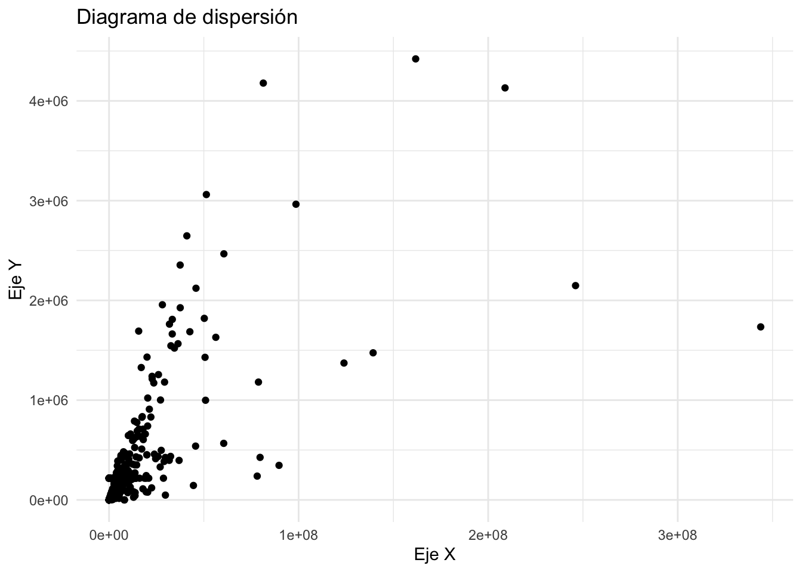
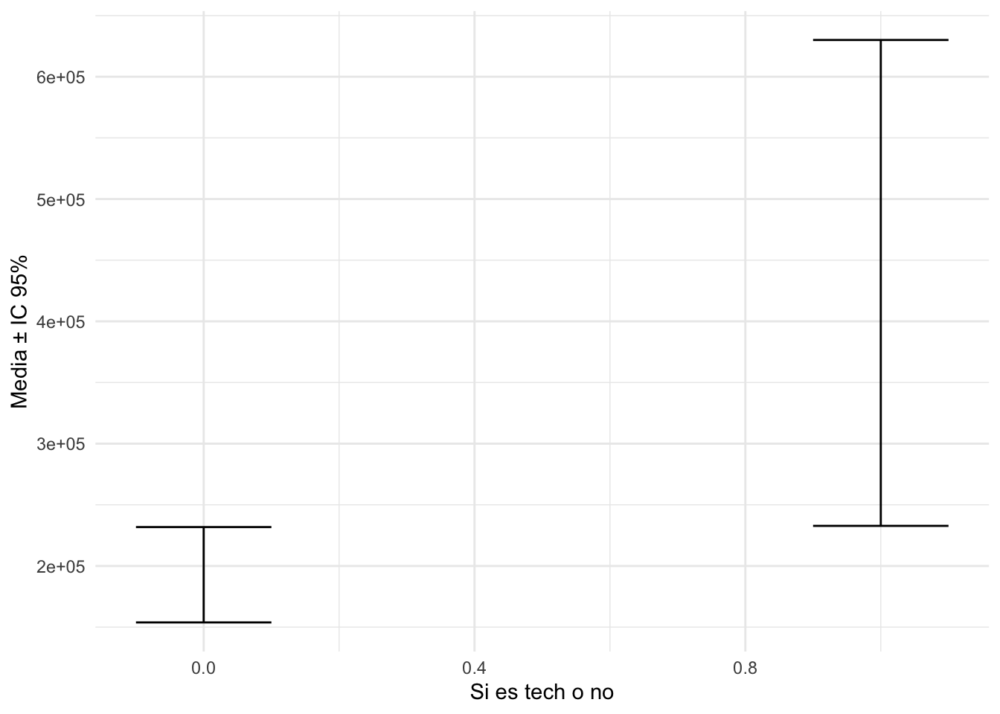

library(rio)
data2=import("youtube_data.csv")Clase teórica Semana 15
Repaso
Ejercicio de repaso
names(data2) [1] "video_id" "title" "description" "published_date"
[5] "channel_id" "channel_title" "tags" "category_id"
[9] "view_count" "like_count" "comment_count" "duration"
[13] "thumbnail" str(data2$view_count) num [1:600] 8962092 289626 81372201 21255964 2790436 ...str(data2$like_count) num [1:600] 243350 3393 4178447 909386 44278 ...Existe una relación entre el número de vistas y el número de likes?
cor.test(data2$view_count,data2$like_count)
Pearson's product-moment correlation
data: data2$view_count and data2$like_count
t = 23.975, df = 598, p-value < 2.2e-16
alternative hypothesis: true correlation is not equal to 0
95 percent confidence interval:
0.6568404 0.7387255
sample estimates:
cor
0.7000773 Gráfico de dispersión
library(ggplot2)
ggplot(data2, aes(x = view_count, y = like_count)) +
geom_point() +
labs(title = "Diagrama de dispersión", x = "Eje X", y = "Eje Y") +
theme_minimal()
Existe una diferente de medias del número de likes entre los videos que pertenecen al grupo tech o no ?
t.test(like_count~es_tech,data=data2)
Welch Two Sample t-test
data: like_count by es_tech
t = -2.3555, df = 65.953, p-value = 0.02148
alternative hypothesis: true difference in means between group 0 and group 1 is not equal to 0
95 percent confidence interval:
-440840.7 -36354.8
sample estimates:
mean in group 0 mean in group 1
192809.5 431407.3 Gráfico de barras de error
library(lsr)
library(dplyr)
Attaching package: 'dplyr'The following objects are masked from 'package:stats':
filter, lagThe following objects are masked from 'package:base':
intersect, setdiff, setequal, uniontabla=data2%>%
group_by(es_tech)%>%
summarise(
promedio=mean(like_count),
linferior=ciMean(like_count)[1],
lsuperior=ciMean(like_count)[2]
)
tablalibrary(ggplot2)
ggplot(tabla, aes(x = es_tech, y = promedio)) +
geom_errorbar(aes(ymin = linferior, ymax = lsuperior), width = 0.2) +
labs(x = "Si es tech o no", y = "Media ± IC 95%") +
theme_minimal()